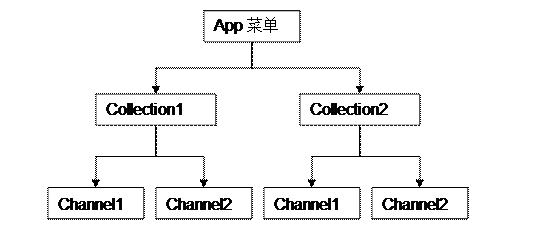

本章节主要讲解菜单的配置以及相关开发的方法。
详见前端开发指南
菜单以树的结构管理形成。分为collection和channel。具体见下图

其中collection分为根节点、和普通节点，用了表示非叶子节点；channel用来表示叶子节点
[{id,"ebankv2_root"},
{app,"ebank"},
{name,"标准银行"},
{url,undefined},
{user_id,undefined},
{type,1},
{state,1},
{items,[[{item_id,"mine"},{item_type,0},{menu_order,1}]]}],
[{id,"credit_invoke"},
{app,"ebank"},
{name,"信用卡还款"},
{entry,channel_adapter},
{views,undefined},
{props,[{method,post},
{encrypt_flag,1},
{need_login,"true"},
{post,1},
{trancode,"mxh151"}]},
{state,1}]
参见代码如下：
'first_page'(TranCode, Channel) ->
Id = ?param("collection_id"),
Type = ?param("type","collections"),
%%关键代码
Menu = ebank_controller:get_menu(Id,list_to_atom(Type)),
cs_api:render("ebank_list_i",Menu),
%%关键代码
Res.
输出结果如下：
{
"response": {
"error_code": "0000",
"error_msg": "",
"timeoffset": "",
"menu": {
"id": "ebankv2_root",
"name": "",
"img": "collection_ebankv2_root.png",
"sub": [
{
"id": "poc_transfer",
"name": "12312312",
"img": "channel_poc_transfer.png",
"trancode": "MB0001",
"post": "1",
"need_login": "true",
"sub": []
},
{
"id": "mobile_pay",
"name": "充值",
"img": "channel_mobile_pay.png",
"trancode": "MB0001",
"post": "1",
"need_login": "true",
"sub": []
},
{
"id": "foreign_exc",
"name": "理财-HTML5",
"img": "channel_foreign_exc.png",
"trancode": "MB3012",
"post": "1",
"need_login": "true",
"sub": []
},
{
"id": "poc_finance",
"name": "理财",
"img": "channel_poc_finance.png",
"trancode": "MB2011",
"post": "1",
"need_login": "mb2012#mb2013",
"sub": []
},
{
"id": "flight",
"name": "飞机票",
"img": "channel_flight.png",
"trancode": "MB0001",
"post": "1",
"need_login": "true",
"sub": []
}
]
}
}
}
注意事项：channel菜单必须为叶子节点，也可以游离于菜单树之外，此为后话。
2、菜单树参数的定制流程
项目中可能会增加一些参数，此处提供修改，添加的说明。举一个例子说明： 添加参数transfer_flag（转账权限开关）
[{id,"credit_invoke"},
{app,"ebank"},
{name,"信用卡还款"},
{entry,channel_adapter},
{views,undefined},
{props,[{method,post},
{encrypt_flag,1},
{need_login,"true"},
{post,1},
%%添加参数
{transfer_flag,1},
{trancode,"mxh151"}]},
{state,1}]
%%新增transfer_flag
-record(menu,{id,name,trancode = "",post = "",need_login = "",transfer_flag = "",tms_html = "",sub = [],url = []}).
#{cs if:row.transfer_flag != "" && row.transfer_flag != undefined}#
"transfer_flag":"#{cs var:row.transfer_flag}#",
#{cs /if}#
通过以上步骤基本上已经说明了菜单功能的设计了。